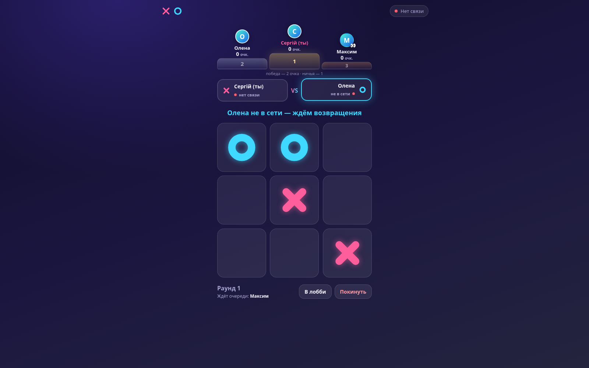

Лобі й присутність
Створення гри, список суперників і статуси «у грі», «у лобі», «не в мережі». Retained-повідомлення та MQTT Last Will допомагають оновлювати присутність після обриву з’єднання.
Хрестики-нулики для 2–3 гравців по мережі: створення партії, лобі, раунди з рахунком і режим «цар гори». Кожен пристрій зберігає журнал подій та може повернутися до перерваної гри. Власного сервера застосунку немає; зв’язок іде через публічний MQTT-брокер.
Гравець вводить ім’я, створює партію або знаходить суперника в лобі. Раунди починаються автоматично; право першого ходу чергується. Власні ходи завжди показуються хрестиками, ходи суперника — нуликами.
Головний технічний акцент — не дошка 3×3, а продовження партії після закриття вкладки чи втрати мережі. Ходи, приєднання та виходи записуються в журнал; дошка, черга, рахунок і склад учасників обчислюються з нього.
Клієнти обмінюються повідомленнями через MQTT поверх WebSocket і зберігають копію партії в localStorage. Мережева гра залежить від доступності брокера; кеш PWA відкриває інтерфейс офлайн, але не замінює зв’язок із суперником.
Створення гри, список суперників і статуси «у грі», «у лобі», «не в мережі». Retained-повідомлення та MQTT Last Will допомагають оновлювати присутність після обриву з’єднання.
Перший хід переходить між гравцями, перемоги й нічиї зберігаються. Після результату починається новий раунд; знаки на дошці відображаються відносно поточного гравця.
За столом двоє, третій спостерігає. Переможець залишається, переможений поступається місцем; за нічиєї виходить той, хто довше за столом. Перемога дає 2 очки, нічия — 1.
Постійний ID пристрою та збережений журнал повертають дошку й рахунок після перезапуску. Перехід у лобі призупиняє участь; окрема кнопка дозволяє остаточно завершити або покинути гру.
Клієнт перевіряє формат і допустимість подій. Право додавати подію має поточний автор ходу; код узгоджує журнали при повторному з’єднанні. Брокер пересилає повідомлення, а логіку партії виконує кожен пристрій.
Маніфест, іконки та service worker підтримують встановлення на домашній екран. Верстка враховує вирізи й жести; є підказки для Android та iOS, а оболонка кешується зі стратегією «спочатку мережа».
HTML, CSS та один авторський JS-модуль без збірки. MQTT.js постачається в vendor/, два публічні брокери задані як основний і резервний; адресу можна змінити параметром broker. app.js поєднує мережу, перевірку й відтворення журналу та відображення інтерфейсу. sw.js кешує статичну оболонку; облікових записів і серверної БД немає.
index.html лобі, очікування, гра, результати style.css дошка, анімації, мобільна верстка app.js replay / mergeLogs стан із журналу й узгодження копій connect / presence MQTT, WebSocket, присутність loadGame / saveGame відновлення з localStorage render / roundFinished дошка, рахунок, зміна гравців vendor/mqtt.min.js локальна MQTT.js manifest.webmanifest встановлення PWA sw.js кеш оболонки: спочатку мережа icons/ звичайні й maskable-іконки
Натисніть на зображення, щоб відкрити його на весь екран. Стрілки ← → гортають галерею.

